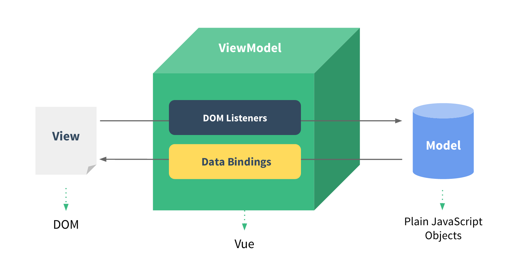

Vue.js
What is a framework?
A software framework is a structure that we can use to build software. It acts as a foundation so we don't have to deal with creating unnecessary extra logic from scratch. A framework provides a set of tools and elements that help in the speedy development process.
Vue.js is a progressive JavaScript framework for building user interfaces. It is ideal for building single-page applications and can also be used to develop components of complex web applications.
Vue is called a progressive framework. This means that it adapts to the needs of the developer.
Vue3 is the latest version, which happens to be way faster and lighter than previous versions. It also comes with improved TypeScript support and many other features like the composition API.
Vue also uses an efficient diffing algorithm to improve the performance of web applications. This minimizes DOM updates and thus increases the responsiveness of the application.
Why Vue is popular?
- Lightweight
- Easy to Learn and Understand
- Robust Tooling Ecosystem
- Flexibility
- Readability
- Documentation
Core Features of Vue
Reactive Data Binding
Vue uses a reactive data model that automatically updates the DOM when the underlying data changes. This two-way data binding simplifies the synchronization between the model and the view.

Components System
Components are reusable building blocks that structure Vue.js applications into modular, maintainable pieces. Developers use components to simplify complex UIs by dividing them into smaller, manageable elements.

Directives
The directives are the Vue-specific syntax elements that can be used in component templates.
Vue directives are a foundational component in the construction of dynamic and interactive web applications using Vue and are perfect for encapsulating shared functionality that can be used over and over throughout an app.
Common directives include:
- v-if: Conditional rendering
- v-for: Looping through arrays or objects
- v-bind: Dynamically bind attributes or classes
v-if example
If isVisible is true, the <div> will be rendered.
If false, it will be removed from the DOM.
<div v-if="isVisible">
This content is visible when isVisible is true
</div>
v-for example
In this case, v-for iterates through the items array, rendering an <li> for each item. The :key helps Vue efficiently update the DOM when the list changes.
<ul>
<li v-for="item in items" :key="item.id">{{ item.name }}</li>
</ul>
v-bind example
This binds the src and alt attributes of the <img> tag to imageUrl and imageAlt properties in your Vue component. Any change in these data properties will automatically update the corresponding HTML attributes.
<img v-bind:src="imageUrl" v-bind:alt="imageAlt">
- v-text
- v-html
- v-show
- v-else
- v-if-else
- v-on
- v-model
- v-slot
- v-pre
- v-once
- v-memo
- v-clock
Computed Properties and Watchers
Computed properties and watchers are two of the most fundamental concepts in Vue.
They have a lot of similarities, so it can be hard knowing which one is best for what you're trying to accomplish.
Watchers
A watcher (or watched prop) let's us track a property on our component and run a function whenever it changes.
Common examples are:
- Fetching data
- Manipulating the DOM
- Using a browser API, such as
local storage or audio playback
Computed Properties
These are properties that depend on other data properties. They are cached based on their dependencies, improving performance.
Computed properties can be used for everything from transforming data, to conditional rendering, and even optimizing performance by caching expensive calculations.